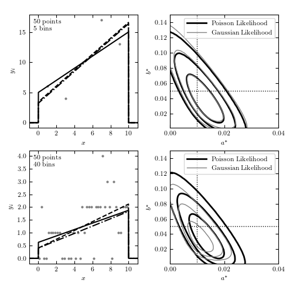

Binned Regression: Poisson vs Gaussian¶
Figure 5.15
The left panels show data sets with 50 points, binned in 5 bins (upper panels) and 40 bins (lower panels). The curves show the input distribution (solid), the Poisson solution (dashed), and the Gaussian solution (dotted). The right panels show 1-sigma, 2-sigma, and 3-sigma likelihood contours for eqs. 5.91 (dark lines) and 5.90 (light lines). With 5 bins (top row) there are enough counts in each bin so that the Gaussian and Poisson predictions are very similar. As the number of bins is increased, the counts decrease and the Gaussian approximation becomes biased.
{kind=link}
# Author: Jake VanderPlas
# License: BSD
# The figure produced by this code is published in the textbook
# "Statistics, Data Mining, and Machine Learning in Astronomy" (2013)
# For more information, see http://astroML.github.com
# To report a bug or issue, use the following forum:
# https://groups.google.com/forum/#!forum/astroml-general
import numpy as np
from matplotlib import pyplot as plt
from scipy import stats, interpolate
from astroML.stats.random import linear
from astroML.plotting.mcmc import convert_to_stdev
#----------------------------------------------------------------------
# This function adjusts matplotlib settings for a uniform feel in the textbook.
# Note that with usetex=True, fonts are rendered with LaTeX. This may
# result in an error if LaTeX is not installed on your system. In that case,
# you can set usetex to False.
if "setup_text_plots" not in globals():
from astroML.plotting import setup_text_plots
setup_text_plots(fontsize=8, usetex=True)
def logL_gaussian(xi, yi, a, b):
"""gaussian log-likelihood (Eq. 5.87)"""
xi = xi.ravel()
yi = yi.ravel()
a = a.reshape(a.shape + (1,))
b = b.reshape(b.shape + (1,))
yyi = a * xi + b
return -0.5 * np.sum(np.log(yyi) + (yi - yyi) ** 2 / yyi, -1)
def logL_poisson(xi, yi, a, b):
"""poisson log-likelihood (Eq. 5.88)"""
xi = xi.ravel()
yi = yi.ravel()
a = a.reshape(a.shape + (1,))
b = b.reshape(b.shape + (1,))
yyi = a * xi + b
return np.sum(yi * np.log(yyi) - yyi, -1)
#------------------------------------------------------------
# Draw points from distribution
np.random.seed(0)
N = 50
a_true = 0.01
xmin = 0.0
xmax = 10.0
b_true = 1. / (xmax - xmin) - 0.5 * a_true * (xmax + xmin)
lin_dist = linear(xmin, xmax, a_true)
data = lin_dist.rvs(N)
#------------------------------------------------------------
# Compute and plot the results
fig = plt.figure(figsize=(5, 5))
fig.subplots_adjust(left=0.1, right=0.95, wspace=0.3,
bottom=0.1, top=0.95, hspace=0.2)
a = np.linspace(0.00001, 0.04, 71)
b = np.linspace(0.00001, 0.15, 71)
for num, nbins in enumerate([5, 40]):
# divide points into bins
yi, bins = np.histogram(data, bins=np.linspace(xmin, xmax, nbins + 1))
xi = 0.5 * (bins[:-1] + bins[1:])
# compute likelihoods for Poisson and Gaussian models
factor = N * (xmax - xmin) * 1. / nbins
LP = logL_poisson(xi, yi, factor * a, factor * b[:, None])
LG = logL_gaussian(xi, yi, factor * a, factor * b[:, None])
LP -= np.max(LP)
LG -= np.max(LG)
# find maximum likelihood point
i, j = np.where(LP == np.max(LP))
aP, bP = a[j[0]], b[i[0]]
i, j = np.where(LG == np.max(LG))
aG, bG = a[j[0]], b[i[0]]
# plot scatter and lines
ax = fig.add_subplot(2, 2, 1 + 2 * num)
plt.scatter(xi, yi, s=9, c='gray', lw=0)
x = np.linspace(xmin - 1, xmax + 1, 1000)
for (ai, bi, s) in [(a_true, b_true, '-k'),
(aP, bP, '--k'),
(aG, bG, '-.k')]:
px = ai * x + bi
px[x < xmin] = 0
px[x > xmax] = 0
ax.plot(x, factor * px, s)
ax.set_xlim(xmin - 1, xmax + 1)
ax.set_xlabel('$x$')
ax.set_ylabel('$y_i$')
ax.text(0.04, 0.96,
r'$\rm %i\ points$' % N + '\n' + r'$\rm %i\ bins$' % nbins,
ha='left', va='top', transform=ax.transAxes)
# plot likelihood contours
ax = fig.add_subplot(2, 2, 2 + 2 * num)
ax.contour(a, b, convert_to_stdev(LP),
levels=(0.683, 0.955, 0.997),
colors='k', linewidths=2)
ax.contour(a, b, convert_to_stdev(LG),
levels=(0.683, 0.955, 0.997),
colors='gray', linewidths=1, linestyle='dashed')
# trick the legend command
ax.plot([0], [0], '-k', lw=2, label='Poisson Likelihood')
ax.plot([0], [0], '-', c='gray', lw=1, label='Gaussian Likelihood')
ax.legend(loc=1)
# plot horizontal and vertical lines
# in newer matplotlib versions, use ax.vlines() and ax.hlines()
ax.plot([a_true, a_true], [0, 0.2], ':k', lw=1)
ax.plot([0, 0.06], [b_true, b_true], ':k', lw=1)
ax.set_xlabel(r'$a^\ast$')
ax.set_ylabel(r'$b^\ast$')
ax.set_xlim(0, 0.04)
ax.set_ylim(0.001, 0.15)
ax.xaxis.set_major_locator(plt.MultipleLocator(0.02))
plt.show()